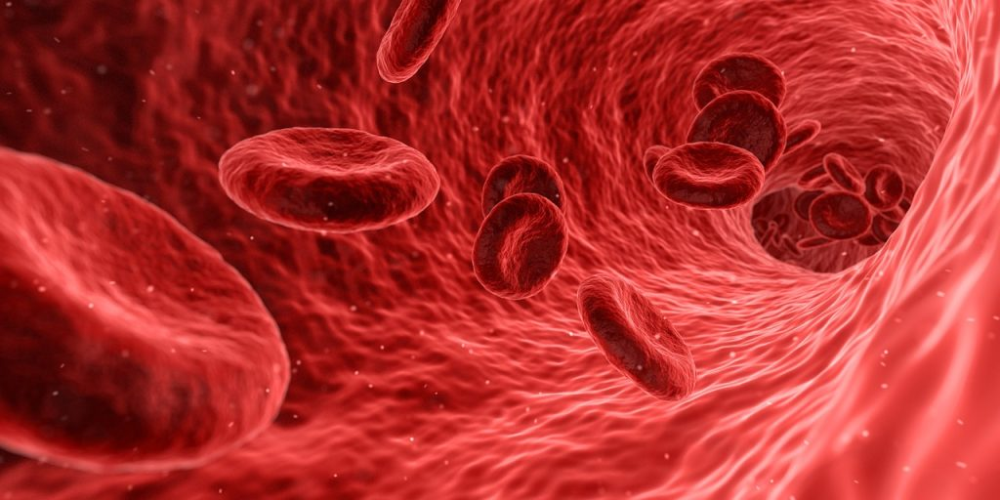

Are you interested in knowing the status of your health? One of the easiest ways to find out is by getting a blood test. Blood tests are essential for maintaining good health and detecting potential health issues. The results of these tests can tell us a lot about our current physical health, including disease-causing infections,, the presence of any diseases, and any potential risk of developing diseases in the future.
Here are ten blood tests that could save your life
A blood sugar test is one of the most critical tests you can perform, especially if you are middle-aged or older. This test measures the amount of sugar (glucose) in your blood. It helps to monitor diabetes as well as to detect any abnormal fluctuations in blood sugar levels, which could be an indication of other health conditions.
A genotype test describes the genetic makeup of your cells and the type of protein (hemoglobin) in your red blood cells. Your genotype influences your physical appearance, biochemical properties, and behavioral patterns. Knowing your genotype is essential to managing your health and choosing the right partner.
Human Immunodeficiency Virus (HIV) is an infection that attacks the body’s immune system, specifically the white blood cells called CD4 cells, which reduces a person’s resistance to opportunistic infections such as tuberculosis, fungal infections, severe bacterial infections, and some cancers. If left untreated, HIV can lead to AIDS (acquired immunodeficiency syndrome). HIV test helps detect HIV and prevent the onset of AIDS.
Determining your blood group is another vital blood test that everyone should do. In a case of an emergency, it helps to eliminate incompatibility issues that may arise during blood donation and transfusion. Additionally, knowing your blood group can help you plan a healthy pregnancy and reduce the risk of miscarriage due to Rh factor incompatibility.
A complete blood count (CBC) is a routine blood test that looks for any abnormal increase in the number of primary cells in your blood (white blood cells, red blood cells, and platelets). Your doctor may order additional testing to confirm a diagnosis if your CBC shows an abnormal level. Abnormal levels may indicate several health issues, including nutritional deficiencies, blood cancer, and anemia.
Some STI infections can be diagnosed with a urine sample, while others require blood samples for testing or a more accurate diagnosis. It is essential to perform a blood test for STIs such as HIV, Herpes, Syphilis, Gonorrhea, and Chlamydia.
A thyroid panel is a series of blood tests used to check and measure the function and level of thyroid hormones in the body. Thyroid hormones help to regulate metabolism, body temperature, and heart rate. This test allows doctors to determine whether a patient has hypothyroidism or hyperthyroidism, two prevalent thyroid disorders.
A metabolic panel provides information about the chemical composition of your body, as well as the function of your kidney, liver, and metabolism. This test includes several tests that look for sodium, potassium, chloride, calcium, blood urea nitrogen albumin, and other factors. It provides you and your doctor with information about how your body works at the molecular level.
The lipid profile is a crucial test for everyone, as it measures the amount of cholesterol and fat in your blood. Your doctor can use the results of this test to identify certain cardiovascular and blood vessel diseases, as well as your risk for them and other conditions.
DHEA stands for “Dehydroepiandrosterone”. It is a hormone found in the adrenal glands that aid the production of testosterone in men and estrogen in women. The DHEA test determines how well your adrenal glands are working, measures the amount of DHEA in your bloodstream, and detects any potential diseases associated with low or high levels of DHEA.
Low and high DHEA levels are linked to diseases, such as adrenal gland disease, low libido, erectile dysfunction, cancer, PCOS, and premature puberty.
While routine blood tests are recommended at least once a year, some individuals may require more frequent blood work checks depending on their health concerns and conditions.
For example, diabetic, high blood pressure, and high cholesterol patients may require more frequent medical blood tests.
Ready to take charge of your health? Visit our laboratory center or book your test to have any of these ten essential blood tests or other health checks performed and live a happier, healthier life

Providing client-focused quality services remains our major focus. Choosing us means choosing the best health services for you and your loved ones.


Leave A Comment
Your email address will be not be Published. Required fields are marked *